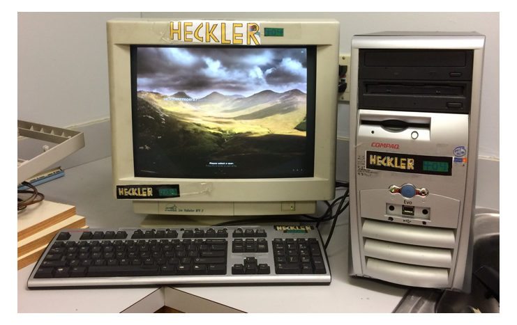
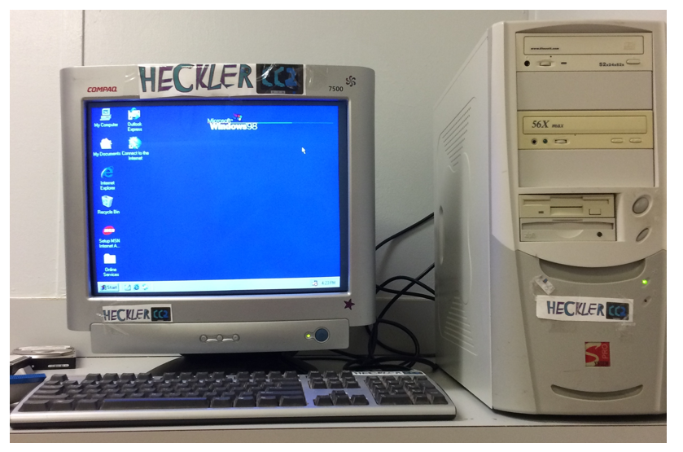
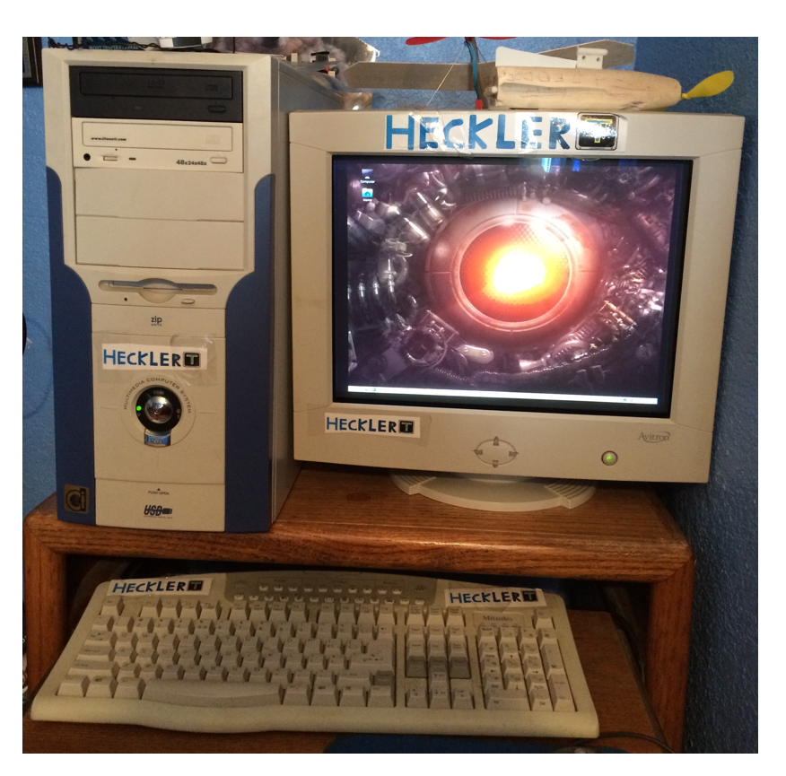
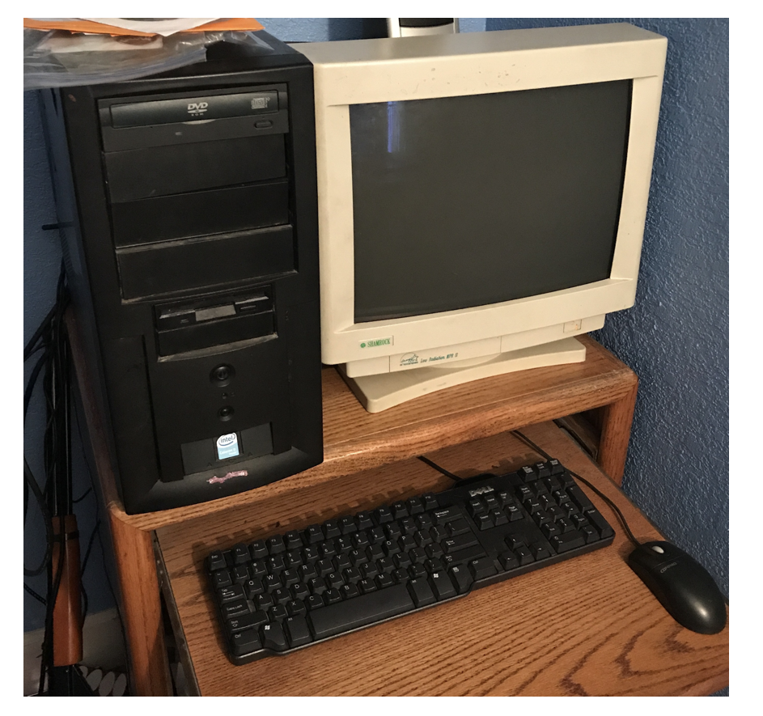
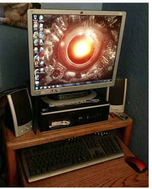
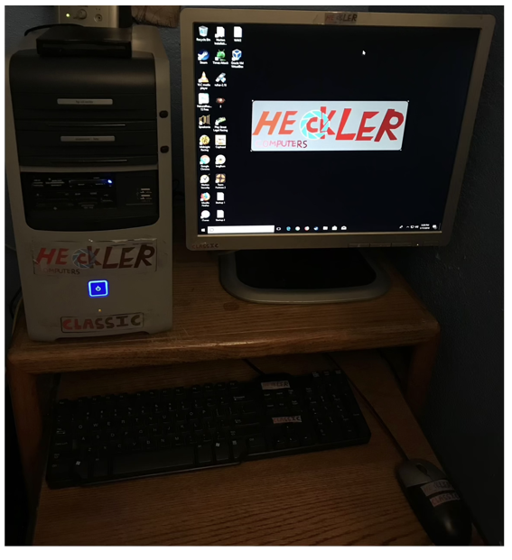
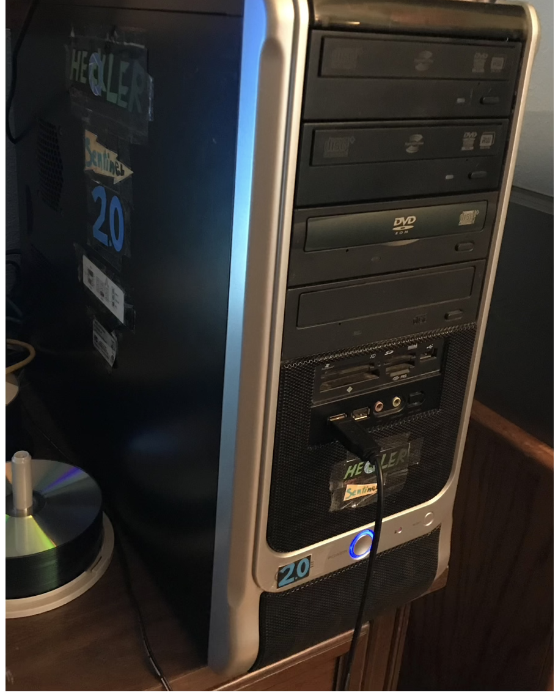
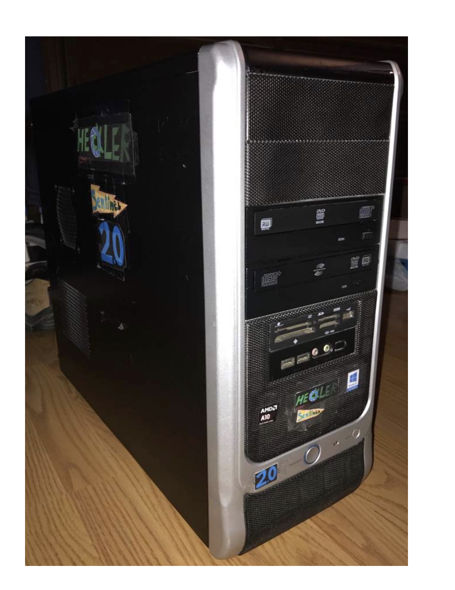
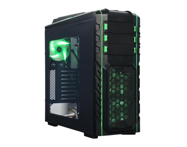

[The history and development of my system, the]
Section 1: "The Early Days"
The story of the development of my system the Saturn started back in as early as 2016, when I became instead inspired in the middle of my art class to pursue my senior project. I began to ponder what it would be like to build a server computer to replace the older unit that ran my school's primary server banks. So a plan began to form inside my head, and finally, I made a decision. To achieve the goal of building a system capable of handling such a task, I would need to experiment and get my hands a bit dirty to understand how to build a computer properly. So over a couple months, I created Four prototypes that would test my skills in computer building, and two of the four were successful.
Prototype 1: "The HECKLER 404"

Prototype 2: "The HECKLER CC2"

Prototype 3: "The HECKLER T"

Prototype 4: "The HECKLER StarBurst"

These prototypes were my first attempts in dabbling in computer building, and in addition, this also began to build my passion for computers as a whole. this was only the start of my journey, however, as I still had much planning and building to do before I would indeed become worthy of constructing my own computer system. Also, while I do not have much footage of my prototypes, I did take the time to make a dedicated video for the HECKLER T, and here is the video I uploaded.
Section 2: "Experimentation"
About two years into my work, I began to build more powerful prototypes that would prove very successful in the long run. They helped open the floodgates for my skills to strive towards building machines out of more modern and complex parts. The first system to become my primary computer was the HECKLER Sentinel mk.1, a small half-height tower system that I modified to run as fast as possible. It lasted me a few months before I strived towards a more traditional tower design. This resulted in an experimental model called the HECKLER Sentinel mk.2 being built, which lasted only a few weeks before moving onto two new models. The HECKLER Classic, which was a modern PC crammed into an old 2004 HP Pavillion case And the HECKLER Sentinel mk.2.5, which was a much taller tower system. The last version of the Sentinel series was a modified version of the 2.5, which I named the HECKLER Sentinel mk.3. The mk.3 was the very first of my prototypes to feature a quad-core CPU, and would be the final prototype I would build.
Prototype 5: "The HECKLER Sentinel mk.1"

Prototype 6: "The HECKLER Sentinel mk.2"
Prototype 7: "The HECKLER Classic"

Prototype 8: "The HECKLER Sentinel mk.2.5"

Prototype 9: "The HECKLER Sentinel mk.3"

The Sentinel mk.3 would mark the end of my prototype era and then pave the way for my future creation. This model utilized somewhat more modern parts than my previous models and would serve as the basis for my design moving forward. Having a powerful CPU, large stylish but modern case, multiple media components, a dedicated graphics card, and a large amount of RAM and storage.
Section 3: "The Building Process"
In 2018 I began to formulate my master plan to build my supercomputer and use it as the basis for my senior project. My idea was to use my original concept of building a computer to replace my school's old server controller system with a more powerful and modern one. So I set out to get the money for the many parts I would need over nearly a solid year and a half of hard work. I did many odd jobs and eventually became employed at a McDonald's restaurant (which was not that great but a good learning experience). Finally, I was able to purchase the needed parts to build my creation, which I lovingly named "The HECKLER Saturn."
The Following series of links are to the differnt parts I purchased for this system.
Unfortunately I was unable to find the name and maker of the case I used, but here is the photo I got of it when I first bought it.

Once I collected all the parts I needed, I began to build my machine! This is the one photo I took of "the asssembly stage" before I started to build it.
Once the building was complete, this was the end result!

The Saturn Proved to be a very powerful and useful machine when I first created it. It has been one of my first major accomplishments, and it would lead to even more accomplishments as well! Firstly, I would actually graduate High school despite not passing a final exam I needed to pass. This is because there was a loophole found that stated if my SAT score was above a specific marker, it could count for my exam in its place. Not only was my SAT score good enough to get me out of High school, but it also was enough to get me accepted to in all honesty the best Univeristy for me. UWB is a quiet and relaxing place for studying and working towards my dream of getting a major in Applied Computing, which also was kickstarted by both my love of computers and the completion of the Saturn. If I had not started on the path to building this incredible machine, I would not be where I am today.
Section 4: "The Present Day"